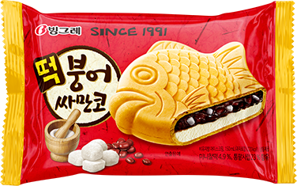

모든 처음에는
설렘이 있다.
1991
겨울 간식 붕어빵을 여름에도 즐길 수 있다면?
그 발상에서
1991년 붕어싸만코가 태어났습니다.

붕어빵이 생각나는 모든 계절.
오늘도, 시원하고 달콤한 한 입.
겨울 간식 붕어빵을 여름에도 즐길 수 있다면?
그 발상에서
1991년 붕어싸만코가 태어났습니다.
친숙한 붕어 모양 속 시원한 아이스크림. 계절이 바뀌어도 반가운 간식으로 함께합니다.
‘싸만코’라는 이름에 담긴 뜻.
과자와 아이스크림, 시럽과 토핑이
어우러진 든든한 한 입을 만나보세요.
세 개의 점을 눌러 풍미를 발견해 보세요.
친숙한 붕어 모양 과자가 달콤한 속을 감싸줍니다.
머리부터? 꼬리부터? 눌러서 오늘의 달콤한 이야기를 만나보세요.
떡붕어싸만코 · 초코 · 호두과자 · 슈크림 · 팝콘 · 말차 · 저당
국내
공식 제품 페이지 게재 라인업 · 2026.10.19 확인